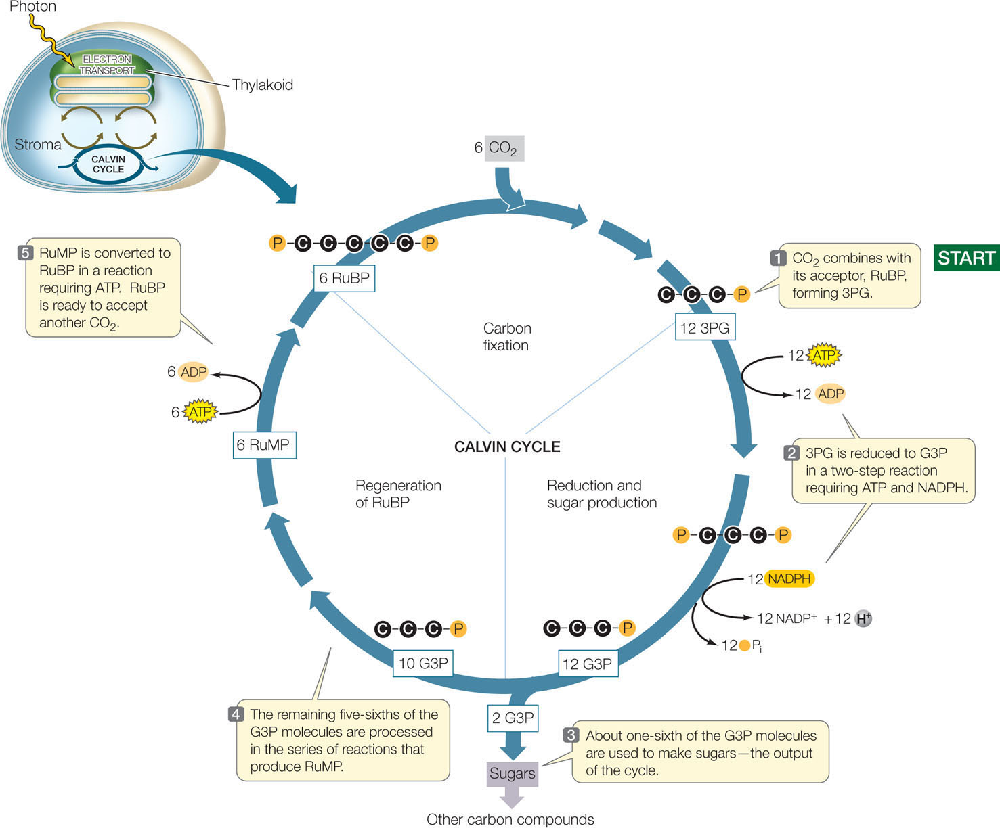
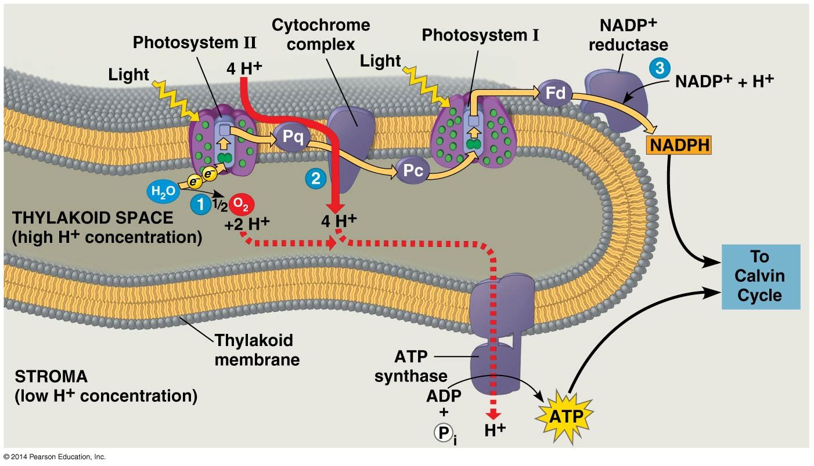

Calvin Cycle
Light Independent Reaction
Happens at Stroma
It's to build Glucose, which is essential for plants
Formula: 6CO2 + 18ATP + 12NADPH + Water --> 2G3P + 16Pi + 18ATP + 12NADP+
Phase 1: Carbon Fixation
3CO2 + 3RuBP -> 6*3phosphoglycerate
Rubisco joins 6 RuBP with 6 CO2, forms 12 3-carbon molecule
CO2 & RuBP turns into 12* 3-carbon chains via hydrolysis
Phase 2: Reduction Reaction
12ATP -> 12ADP, 12NADPH -> 12NADP + 12H + 12Pi
12 ATP and NADPH are spend to produce 12 G3P
It's the reverse of Glycolysis. It's Anabolic and Glycolysis is Catabolic.
2 G3P is moved away from the cycle to the cytoplasm and forms 1 glucose.
Phase 3: RuBP Regeneration
6ATP -> 6ADP
The 10 leftover G3P from phase 2 is recycled back to RuBP, which consumes 6 ATP.

Chemiosmosis & ATP
ATP Synthase pumps H+ out of the membrane to make ATP
The left H+ ion is then combined with NADP+ to form NADPH in the stroma.

Back